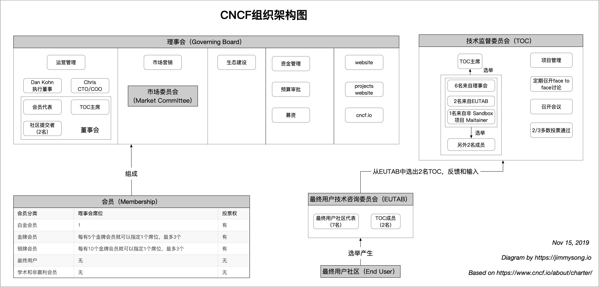
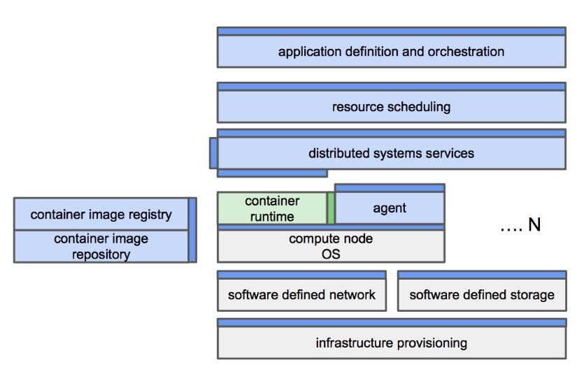

CNCF 章程
CNCF（云原生计算基金会）是 Linux 基金会旗下的一个基金会，加入 CNCF 等于同时加入 Linux 基金会（也意味着你还要交 Linux 基金会的份子钱），对于想加入 CNCF 基金会的企业或者组织首先要做的事情就是要了解 CNCF 的章程（charter），就像是作为一个国家的公民，必须遵守该国家的宪法一样。CNCF 之所以能在短短三年的时间内发展壮大到如此规模，很大程度上是与它出色的社区治理和运作模式有关。了解该章程可以帮助我们理解 CNCF 是如何运作的，当我们自己进行开源项目治理时也可以派上用场。
该章程最后更新于 2018 年 5 月 15 日，详见 https://www.cncf.io/about/charter/。下文中关于 CNCF 章程的介绍部分引用自 CNCF 是如何工作的，有改动。
下图是我根据 CNCF 章程绘制的组织架构图。

1. CNCF 的使命
CNCF 没有偏离自己的主题，核心是解决技术问题：基金会的使命是创建并推动采用新的计算模式，该模式针对现代分布式系统环境进行了优化，能够扩展至数万个自愈式多租户节点。
所谓的云原生系统须具备下面这些属性：
- 应用容器化：将软件容器中的应用程序和进程作为独立的应用程序部署单元运行，并作为实现高级别资源隔离的机制。从总体上改进开发者的体验、促进代码和组件重用，而且要为云原生应用简化运维工作。
- 动态管理：由中心化的编排来进行活跃的调度和频繁的管理，从根本上提高机器效率和资源利用率，同时降低与运维相关的成本。
- 面向微服务：与显式描述的依赖性松散耦合（例如通过服务端点），可以提高应用程序的整体敏捷性和可维护性。CNCF 将塑造技术的发展，推动应用管理的先进技术发展，并通过可靠的接口使技术无处不在，并且易于使用。
2. CNCF 扮演的角色
CNCF 其实是在开源社区的基础上发挥着作用，应负责：
a) 项目管理
- 确保技术可用于社区并且没有杂七杂八的影响
- 确保技术的品牌（商标和标识）得到社区成员的关注和使用，特别强调统一的用户体验和高水平的应用程序兼容性
b) 促进生态系统的发展和演进
- 评估哪些技术可以纳入云原生计算应用的愿景，鼓励社区交付这样的技术，以及集成它们，且要积极的推进总结进度。
- 提供一种方法来培养各个部分的通用技术标准
c) 推广底层技术和应用定义和管理方法，途径包括：活动和会议、营销（SEM、直接营销）、培训课程和开发人员认证。
d) 通过使技术可访问和可靠来为社区服务
- 旨在通过对参考架构进行明确定义的节奏，为每个组成部分提供完全集成和合格的构建。
3. CNCF 的价值观
CNCF 会极力遵循以下一些原则：
- 快速胜过磨叽：基金会的初衷之一就是让项目快速的发展，从而支持用户能够积极的使用。
- 开放！：CNCF 是以开放和高度透明为最高准则的，而且是独立于任何的其它团体进行运作的。CNCF 根据贡献的内容和优点接受所有的贡献者，且遵循开源的价值观，CNCF 输出的技术是可以让所有人使用和受益的，技术社区及其决策应保持高度透明。
- 公平：CNCF 会极力避免那些不好的影响、不良行为、以及 “按需付费” 的决策。
- 强大的技术身份：CNCF 会实现并保持高度的自身技术认同，并将之同步到所有的共享项目中。
- 清晰的边界：CNCF 制定明确的目标，并在某些情况下，要确定什么不是基金会的目标，并会帮助整个生态系统的运转，让人们理解新创新的重点所在。
- 可扩展：能够支持从小型开发人员中心环境到企业和服务提供商规模的所有部署规模。这意味着在某些部署中可能不会部署某些可选组件，但总体设计和体系结构仍应适用。
- 平台中立：CNCF 所开发的项目并不针对某个特定平台，而是旨在支持各种体系结构和操作系统。
4. 会员制
CNCF 中的会员包括白金、金牌、银牌、最终用户、学术和非赢利成员等级别，不同级别的会员在理事会中的投票权不同。
a) 白金会员：在 CNCF 理事会中任命 1 名代表，在理事会的每个次级委员会和活动中任命 1 名有投票权的代表，在网站可以突出显示；如果也是终端用户成员将继承终端用户成员的所有权利。
b) 金牌会员：基金会中每有 5 个金牌会员，该级别的会员就可以任命 1 名代表，最多任命 3 个；如果也是终端用户成员将继承终端用户成员的所有权利。
c) 银牌会员：基金会中每有 10 个银牌会员，该级别的会员就可以任命 1 名代表，最多任命 3 个；如果也是终端用户成员将继承终端用户成员的所有权利。
d) 终端用户：参加终端用户咨询社区；向终端用户技术咨询委员会中提名 1 名代表。
e) 学术和非赢利会员：学术和非营利会员分别限于学术和非营利机构，需要理事会批准。学术成员和非营利成员有权将其组织认定为支持 CNCF 使命的成员以及理事会确定的任何其他权利或利益。
5. 理事会
a) CNCF 理事会负责市场营销、业务监督和预算审批，不负责技术方面，除了与 TOC 配合确定 CNCF 工作范围、完成时间表 a)、更新 CNCF 网站
b) 负责日常事务
- 与 TOC 协商 CNCF 的整体范围
- 商标和版权保护
- 市场营销、布道和生态系统建设
- 创建和执行品牌承诺项目，如果需要的话
- 监督运营，业务发展
- 募资和财务管理
c) 理事会投票成员由会员代表和社区代表组成：
- 成员代表包括：
- 每名白金会员任命 1 名代表；
- 黄金和银牌成员当选代表。
- 技术社区代表包括：
- 技术监督委员会主席；
- 根据当时在任的理事会批准的程序从 CNCF 项目中选出两名提交者。
- 理事会可能会以白金会员比例的价格扩展白金会员资格，对年收入低于 5000 万美元的创业公司进行长达 5 年的逐年审计，这些公司被视为理事会的战略技术贡献者。
- 只有来自一组关联公司的人员可以担任会员代表。只有来自一组关联公司的人员可以担任技术社区代表。
d) 职责
- 批准预算，指导将所有收入来源筹集的资金用于技术、市场或社区投资，以推动 CNCF 基金的使命；
- 选举理事会主席主持会议，批准预算批准的支出并管理日常运作；
- 对理事会的决定或事项进行投票；
- 界定和执行基金会的知识产权（版权，专利或商标）政策；
- 通过活动、新闻和分析师宣传、网络、社交媒体以及其他营销活动进行直接营销和布道；
- 监督运营，业务发展；
- 建立并监督为推动 CNCF 的使命而创建的任何委员会；
- 根据 CNCF 要求（可能包括认证测试）建立并执行品牌合规计划（如有），以使用 TOC 建立的品牌标志；
- 采用商标使用准则或政策；
- 提供整体财务管理。
e) 基金会的收入用途
- 市场营销，用户扩展 CNCF 中的项目的采用
- 关键设施建设、运行和管理项目的基础设施
- 促进基于容器的计算使用 CNCF 中的项目实现
6. 技术监督委员会（TOC）
a) 要求
CNCF 技术监督委员会，为了保持中立，达成了以下共识：
- 定义和维护 CNCF 的技术愿景。
- 批准由理事会制定的 CNCF 范围内的新项目，并为项目创建一个概念架构。
- 纠正项目的发展方向，决策删除或存档项目。
- 接受最终用户委员会的反馈并反映在项目中。
- 在科学管理的情况下调整组件的接口（在代码标准化之前实现参考）。
- 定义在 CNCF 项目中实施的常用做法（如果有的话）。
b) 技术监督委员会的构成
- TOC 最多由 11 名成员组成。
- 选出的 TOC 成员将涵盖关键的技术领域：容器技术、操作系统、技术运维、分布式系统、用户级应用程序设计等。
- 理事会将选举 6 名 TOC 成员，最终用户 TAB 将选出 2 名 TOC 成员，非 Sandbox 项目的 Maitainer 选出 1 名 TOC 成员，TOC 成员再选出另外 2 名 TOC 成员。每个组都被定义为一个甄选小组（Selecting Group）。
- 如果超过 2 名 TOC 成员来自同一组关联公司，无论是在选举时还是来自后来的工作变更，他们将共同决定谁应该下台，或如果没有协商的依据，则应抽签决定。
c) 运营模式
- TOC 会选举出 TOC 的主席来，此角色主要负责 TOC 的议程和召集会议。
- TOC 期望定期的面对面讨论重要的热点问题。
- TOC 可能会根据需要召开会议以讨论新出现的问题。可能会通过以下方式提出要进行 TOC 审查的问题：
- 任何的 TOC 成员
- 任何的理事会成员
- CNCF 项目的维护者或顶级项目负责人
- CNCF 执行董事
- 最终用户 TAB 获得多数票
- 保持透明：TOC 应举办定期的开放会议，所有项目相关的决定应该在会议、公共邮件列表、公共议题中做出。
- 简单的 TOC 问题可以通过简短的讨论和简单的多数表决来解决。TOC 讨论可通过电子邮件或 TOC 会议进行。
- 在对意见和可选虚拟讨论 / 辩论选项进行审查后，寻求共识并在必要时进行投票。
- 目的是让 TOC 在 TOC 和社区内寻找达成共识的途径。满足法定人数要求的会议的 TOC 决定应以超过 TOC 成员出席率的 50％的方式通过。
- TOC 会议需要 TOC 总人数的三分之二法定人数进行表决或作出任何决定。如果 TOC 会议未能达到法定人数要求，可以进行讨论，但不应有任何投票或决定。
- TOC 决定可以在没有会议的情况下以电子方式提出，但要通过表决则需要多少票数才能达到会议法定人数。在电子投票中，如果任何两名 TOC 成员要求召开会议讨论决定，则电子投票结束时无效，并且在会议结束后可以启动新的投票，以讨论决定已经完成。
d) 提名标准
获得 TOC 提名应该具备下面条件：
- 承诺有足够的可用时间参与 CNCF TOC 的活动。
- 在 CNCF 范围内展示了高水准的专业经验。
- 证明其有资格能够获得额外的工作人员或社区成员协助其在 TOC 的工作。
- 在讨论中保持中立，并提出 CNCF 的目标和成功与公司目标或 CNCF 中的任何特定项目保持平衡。
e) TOC 成员提名和选举程序
- 提名：甄选小组中的每个人最多可以提名两（2）人，其中最多一（1）个人来自同一组关联公司。每个被提名人必须同意参与才能被添加到提名列表中。
- a) 提名需要最多一（1）页的提名议案，其中应包括被提名人的姓名，联系信息和证明被提名人在 CNCF 领域的经验的支持声明。
- b) 理事会应确定 TOC 成员的提名，资格和选举的过程和时间表。
- c) 在评估期内，至少应保留 14 个日历日，以便理事会和 TOC 成员可以与 TOC 提名人联系。
- 资格：在评估期之后，理事会和 TOC 成员应分别对每位被提名人进行投票，以验证被提名人是否符合资格标准。有效的投票至少需要 50％的参与。合格率超过 50％的被提名人为合格被提名人。
- 选举：如果合格提名人的数量等于或小于可供选择的 TOC 席位的数量，则在提名期结束后应批准合格提名人。如果合格的被提名人数量超过可以选举的 TOC 席位，则甄选小组应通过 Condorcet 投票选出 TOC 成员。Condorcet 投票应通过康奈尔在线服务（http://civs.cs.cornell.edu/）使用 Condorcet-IRV 方法运行。
- TOC 选定的席位：TOC 选定的 TOC 成员可以提名并有资格，但在其席位需要选举时不能投票。
- 重试。如果合格候选人的数量少于选择小组可以选择的开放式 TOC 席位，则该小组应发起另一轮提名。
f) 约束条件
- TOC 的成员任期为两年，交错式任期。
- TOC 成员可能会被其他 TOC 成员的三分之二投票撤除，受影响的个人不能参加投票。
- 任何 TOC 成员连续 3 次缺席会议都将被自动暂停投票资格，直至连续参加两次会议。为避免疑义，暂停的 TOC 成员有资格在连续第二次会议中投票。
- TOC 议程将由 TOC 制定。但是，预计最初的 TOC 讨论和决定将包括：
- 评估包含在 CNCF 中的技术
- 确定新技术纳入 CNCF 的接受标准
- 定义批准作为标准 API 的贡献技术的流程
- 找出需要进一步调查的直接差距
7. 最终用户社区
a) CNCF 的最终用户成员有权协调和推动 CNCF 用户作为 CNCF 设计的消费者的重要活动。任何作为最终用户的成员或非成员，每个 “最终用户参与者” 均可被邀请参加。最终用户参与者将帮助向技术咨询委员会和 CNCF 社区就与用户有关的主题提供意见。
b) 最终用户技术咨询委员会是由最终用户社区成员选举所产生。
c) 最终用户社区成员将获得 CNCF 执行董事的批准，或者 CNCF 执行董事缺席的话，则由 Linux 基金会执行董事来批准。
8. 最终用户技术咨询委员会（“最终用户 TAB”）
a) 构成：最终用户 TAB 应由来自最终用户参与者的 7 名代表加上 TOC 的 1 名成员组成，以便于从最终用户 TAB 到 TOC 的晋级。
b) 选举：为了鼓励最终用户参与 CNCF，前 7 名最终用户会员可以委任 1 名代表参加初始最终用户 TAB，并将 CNCF 董事分配给任何最终用户参与者的任何剩余席位。在第一年之后，所有最终用户参与者可以提名 1 名代表并且最终用户社区应该投票选择使用当前最终用户 TAB 批准流程的最终用户 TAB 成员。
c) 经过三分之二投票通过后最终用户 TAB 可以更改最终用户社区的大小，前提是至少有 7 名可能的代表。
d) 最终用户代表应当基于业务和技术敏锐度提名。候选人应该具备建设和运营体现 CNCF 原则的基础设施和应用方面的重要实践经验。
e) 最终用户 TAB 将讨论和推进主题，重点是找出 TOC 和 CNCF 开发者社区的差距并提出优先事项。
f) 也会侧重于主动推进最终用户关心的话题，促进 CNCF 的市场采用，为最终用户举办会议或向理事会提供咨询。
g) 如果最终用户 TAB 有意愿的话，它可以批准小组委员会特别兴趣小组 （“SIG”）来解决行业或专业话题。
h) 最终用户 TAB 是技术监督委员会的主要输入方，应与技术监督委员会的其他输入方和反馈一起作出决策和计划。这些建议只是建议性的，在任何时候，最终用户 TAB 的建议都不能用于命令或指导任何 TOC 或项目参与者采取任何行动或结果。
9. CNCF 项目
通常情况下，是由 CNCF 的成员公司、开源社区的成员将项目先是带到 CNCF 的技术监督委员会来进行讨论，然后决定是否被 CNCF 接纳。要贡献给 CNCF 的项目必须是经过技术监督委员会制定的标准的，之后当然还要经过理事会的批准。CNCF 的目标是希望捐赠给 CNCF 的项目和 CNCF 已有的项目在一定程度上是有关联的，而且是可集成的。
和 CNCF 关联起来有以下三种方法：
已经在 CNCF 的纳管之下，毕竟 CNCF 是中立的，致力于成为大家的协作的归属地。
a) 项目的方方面面都交由 CNCF 来打理
b) 项目是由 CNCF 来进行市场推广的
c) 项目是解决云原生计算问题的核心组件，如 Kubernetes、Mesos、etcd 等等
通过 API 或规范与 CNCF 相关联 XM
a) 包括 CNCF 可能提供或启用多个选项的组件
b) 该项目被称为 CNCF 集成的一个组成部分，而不是由 CNCF 主办的项目
c) 集成和合规性由 API 或规范定义
d) 项目或组件的开发是由上游社区所开发，而且保持一定的活跃度
CNCF 使用到的
a) 项目或组件完全根据 OSI 批准的开源许可证进行授权，并且管理良好，并在 CNCF 中被用作组件。
b) 项目并没有由 CNCF 来进行市场推广
c) 项目或组件的开发是由上游社区所开发，而且保持一定的活跃度
现有的开源项目应该继续保持其现有的技术治理结构，以保持凝聚力和速度。但是由技术监督委员会批准之后，则会适当的进行一些适应。
应根据个人的水平和贡献期限在项目间建立一个达到提交者地位的标准协议。因为提交者是维护者的选拔人才池，有了一定程度的贡献，且经过同行们的认可，提交者就可晋升为维护者。
CNCF 启动的新开源项目应完成 TOC 采纳的项目建议模板，并由 TOC 批准纳入 CNCF。TOC 成员应有充足的时间讨论和审查新的项目建议书。新的项目建议书应包括项目中的角色细节，为项目提出的治理，并确定与 CNCF 的角色和价值观保持一致。
10. 市场委员会
a) 构成，市场委员会将向所有成员开放参与，应选举市场委员会主席制定会议议程，进行一般的讨论，并帮助委员会实现其目标。市场委员会应尽可能寻求共识。在市场委员会中无法达成共识的任何问题应提交给理事会。
b) 职责，市场委员会代表理事会负责设计，开发和执行相关的市场工作。
c) 如果市场委员会变得太大而无法有效运作，市场委员会可以选择选举市场董事，并将决策权委托给市场董事。
11. 知识产权政策
a) 任何加入到 CNCF 的项目都必须将其拥有的商标和徽标资产的所有权转让给 Linux 基金会。
b) 每个项目应确定是否需要使用经批准的 CNCF CLA。对于选择使用 CLA 的项目，所有代码贡献者将承担 Apache 贡献者许可协议中规定的义务，只有在必要时才作出修改，以确定 CNCF 是捐赠的接受者，并且应由理事会批准。请参阅 https://github.com/cncf/cla 上提供的 CNCF 参与者许可协议。
c) 所有向 CNCF 提交的新入站代码应当（i）附有开发者原始证书签名（http://developercertificate.org 和（ii）根据 Apache 许可证 2.0 版（可从 http://developercertificate.org 和 http://www.apache.org/licenses/LICENSE-2.0 获得）该许可证除了并且不得取代根据上文（b）规定的供款许可协议所承担的义务。
d) 所有出站代码将在 Apache 许可证 2.0 版下提供。
e) 所有评估纳入 CNCF 的项目都必须获得 OSI 批准的开源许可证的完全许可，如果 CNCF 中包含的项目的许可证不是 Apache 许可证 2.0 版，则需要获得理事会的批准。
f) 所有文档将由 CNCF 根据知识共享署名 4.0 国际许可证来提供。
g) 如果需要替代入站或出站许可证以符合杠杆式开放源代码项目的许可证或为实现 CNCF 的使命而需要其他许可证，理事会可以批准使用替代许可证对于例外情况下的接受或提供的项目捐赠。
12. 反托拉斯指南
a) 所有成员均应遵守 http://www.linuxfoundation.org/antitrust-policy 上提供的 Linux 基金会反托拉斯政策中规定的 Linux 基金会的要求。
b) 所有成员都应鼓励任何能够满足成员要求的组织的公开参与，而不论其竞争利益如何。换言之，理事会不应根据除用于所有成员的标准，要求或原因之外的任何标准，要求或理由寻求排除成员。
13. 行为准则
所有参与者都须同意遵守 Linux 基金会行为准则。 TSC 可以投票通过自己的 CNCF 行为准则。
14. 关联公司
a) 定义：
- “子公司” 是指会员直接或间接拥有所涉实体超过百分之五十有投票权的证券或会员权益的任何实体；
- “关联公司” 是指任何控制或由成员控制的实体，或者与成员一起受第三方共同控制的实体，在所有情况下，直接或间接拥有多于所有权的控制权；
- “关联公司” 是指各成员的关联公司。
b) 只有执行了参与协议的法人实体及其子公司才有权享有该会员的权利和特权；但条件是该成员及其子公司应作为单一成员共同对待。
c) 只有一名属于一组关联公司的成员有权一次性任命或提名理事会代表参加类别选举。
d) 如果会员本身是会员或赞助商的基金会，联盟，开源项目，会员组织，用户组或其他实体，那么授予该成员的权利和特权只能扩展到该成员的员工代表，而不能扩展到其成员或发起人，除非理事会不时在特定情况下另行批准。
e) 会员资格不得转让，不可转让、也不能转让，除非现有会员将其现有的会员利益和义务转让给其大部分业务和 / 或资产的继任者，无论是通过合并，出售还是其他方式；只要受让人同意遵守 CNCF 的章程以及 Linux Foundation 成员所需的章程和政策。
15. 预算
a) 理事会应批准年度预算，绝不会承诺超出筹集的资金。预算应与 Linux 基金会的非营利性使命相一致。
b) Linux 基金会应定期报告预算支出。
16. 常规和管理费用
a) Linux 基金会应保管任何费用，资金和其他现金收据。
b) 一般和行政（G＆A）费用将用于筹集资金以支付财务、会计和运营费用。 G＆A 费用应等于 CNCF 首期总收入 1,000,000 美元的 9％以及 CNCF 总收入超过 1,000,000 美元的 6％。
17. 一般规则和操作
参与 CNCF 应做到：
a) 展示与开源项目开发人员社区进行协调的计划和方法，包括关于代表社区的品牌、徽标和其它标志性的主题；
b) 以专业的方式体现维持社区的凝聚力为目标，同时还要保持 Linux 基金会在开放源代码软件社区的善意和尊重；
c) 尊重所有商标所有人的权利，包括任何品牌和使用准则；
d) 参与 Linux 基金会的所有新闻和分析师关系活动；
e) 根据要求，向 Linux 基金会提供关于项目参与的信息，包括参加项目赞助活动的信息；
f) 直接参与到基金会旗下的任何站点；
g) 根据理事会批准的规则和程序进行运营，前提是这些规则和程序不得与 Linux 基金会的宗旨和政策不一致，并且不得损害 Linux 基金会。
18. 修正案
本章程可以通过所有理事会成员的三分之二票数（不包括弃权）进行修改，前提是任何此类修改不得与 Linux 基金会的目的或政策不一致，并且不得对 Linux 基金会产生不利影响。
时间表 A：提出 CNCF 范围愿景
CNCF 背后的首要目标是支持和加速 “云原生计算” 的采用。以下内容是初步范围，旨在阐明 CNCF 将努力实施的 “云原生计算” 的核心概念。该初始范围应成为发布在 CNCF 网站上的文档。
CNCF 社区坚信云原生计算包含三个核心属性：
- 容器化包装和分发
- 动态调度
- 面向微服务
注：关于云原生的定义正在重新设定中，已经与上述不同了。
云原生计算系统支持基于这些核心属性的计算，并包含以下理想：
- 开放性和可扩展性
- 在标准化子系统的边界处定义良好的 API
- 应用程序生命周期管理的最小障碍

因为上述时间表已经有些过时了，CNCF 成立已经有三年时间了，正在规划新的方案。